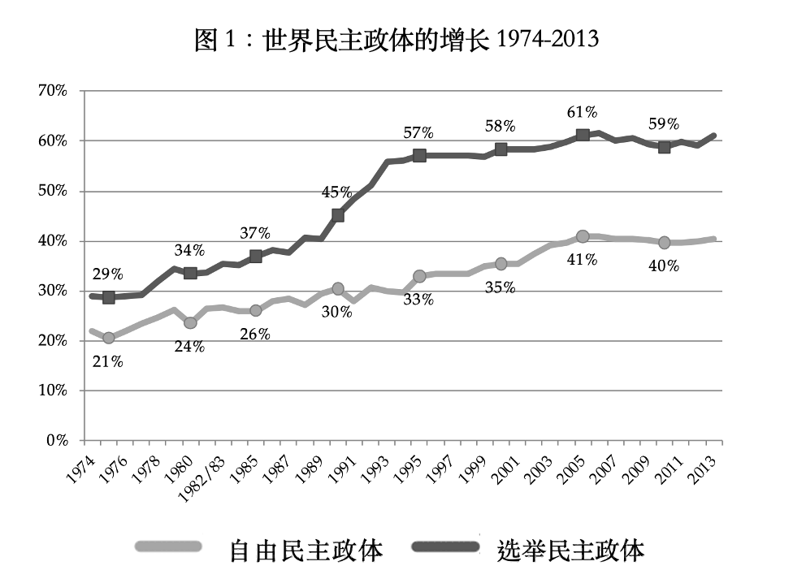
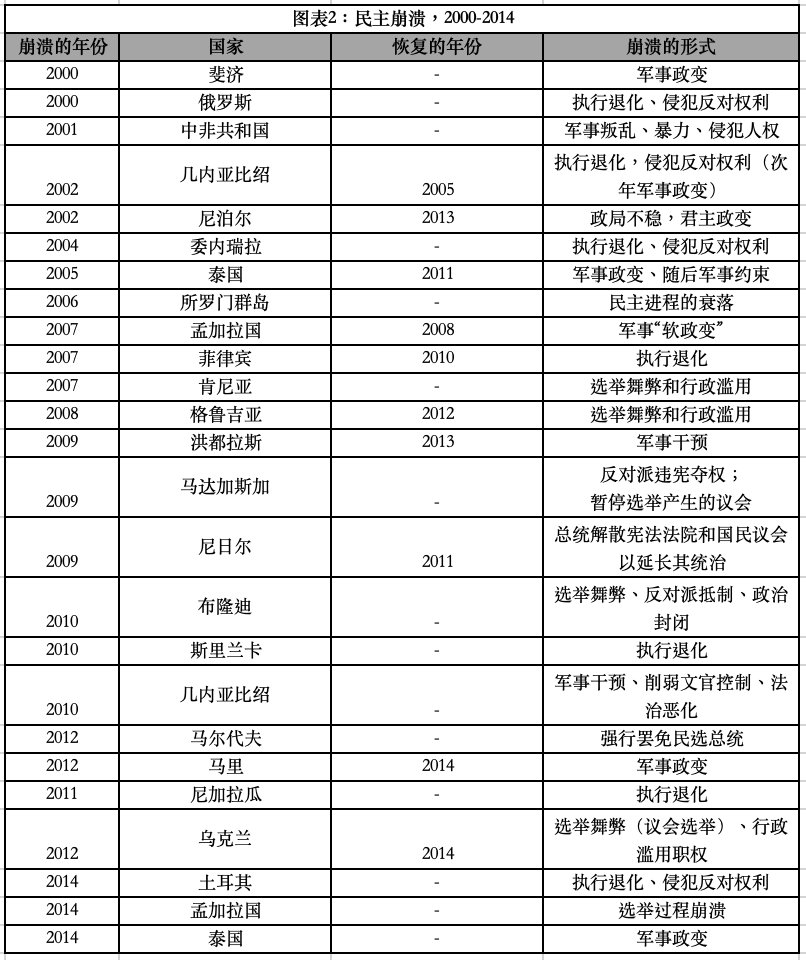

收录于合集 #《国际关系前沿》2022年第1期 23个

作品简介
作者： Larry Diamond （戴雅门） ，美国斯坦福大学政治学和社会学教授。其研究重点是世界各地的民主趋势和状况，以及捍卫和推进民主的政策和改革。
编译： 张彦赪（国政学人编译员，悉尼大学国际关系专业）
来源： Diamond, L. (2015). Facing up to the democratic recession. Journal of Democracy , 26(1), 141-155.
归档： 《国际关系前沿》2022年第1期，总第40期
导 读
本文由知名资深的民主理论学者戴雅门发表于2015年，文章概述了1974年第三波民主化以来到2014年的情况， 作者认为西式民主政体显现衰退趋势，呼吁直面民主的衰退。 在定义上，戴雅门将民主政体形容为“公民可以通过普选在定期、自由、公平和有意义的选举中选择和替换其领导人”的制度。[1]在方法上，本文采用了“自由之家”（Freedom House）对于民主政体的评估衡量方法，通过呈现一系列图表数据，指出世界民主国家的数目日益减少、民主衰退速度加剧、世界自由程度显著下降。同时，作者也以相关案例事实加以佐证，并提出世界民主的衰退体现在四大方面：整体上民主国家的不稳定和停滞、处于灰色地带国家中民主元素的衰弱、威权体制的加深、以及成熟民主国家的功能退化和自信下降。值得注意的是，本文着眼于全球层面的民主状况概述，而不在于对特定国家的体制状况加以价值论断。作者认为，民主衰退的病症表现在政客为了选票不择手段、操纵选举；宗教和种族等多种不同身份认同撕裂社会；国家治理能力不足或权力滥用；社会自由度下降，如异议者、公民社会和媒体的发声空间萎缩等。
”西式民主“真的衰退了吗？对此的争论如火如荼。在同期学刊上，来自哈佛大学的Steven Levitsky教授和多伦多大学的Lucan Way教授则登文《民主衰退的迷思》，他们表示，民主衰退是错误的观念，相反地，民主体制不但没有衰退反而生命力旺盛，他们认为许多声称民主政体的国家并非真正的民主。[2] 如今7年已过，但美国国会暴乱、缅甸军事政变、乌克兰局势紧张等一系列政治事件中，戴雅门的“预言”和警告似乎并不过时。尤其在新冠疫情笼罩的两年多来，世界各国的资源分配模式、社会生活方式受到显著影响。不同政体、国家应对新冠共同难题的做法各有千秋。有的国家采用“大政府、小社会”的模式，拥有较强动员能力；有的国家则采用强调“尽可能限制国家权力，保障个人权利”。[3] 不同解决措施所造成的短期、长期结果也不尽相同，因而也加深、加剧了世界对于不同体制的批判、检讨、反省。如果民主体制诚如作者在文中所言，是“更好的想法”[1]、并且有利于长期的稳定，那么对于制度的思考则须不带有优越感的考量亦不应局限在政治化的抨击之中。而倘若“民主是全人类共同价值，不会衰落” [4]，那么在不同体制的彼此批判间或应留有相互学习的空间，避免树起对立割裂的高墙。
编 译
01
前言
2014 年是葡萄牙康乃馨革命的四十周年，这场革命拉开了亨廷顿所说的全球第三波民主化的序幕。任何对现今全球民主状况的评估都必须始于对这场历史性民主化之持久的承认与惊叹。在1974年第三波民主化开始前，世界上只有大约 30% 的独立国家符合选举民主（electoral democracy）的标准。在这个制度中，公民可以通过普选在定期、自由、公平和有意义的选举中选择和替换其领导人 。那时世界上只有大约 46 个民主国家，且其中大部分是来自西方且富裕的自由民主政体，以及一些曾经是英国殖民地的小岛国；仅有少数的发展中的民主国家存在：主要是印度、斯里兰卡、哥斯达黎加、哥伦比亚、委内瑞拉、以色列和土耳其。
从 1975 年到 2007 年，民主国家的数量基本上或保持稳定或逐年累加。尽管这些新的“民主国家”中的有一些非常不自由、甚至在某些情况下被斯蒂芬·列维斯基（Steven Levitsky）和卢坎·维（Lucan Way）称作是竞争性威权主义政体（competitive authoritarian），但这三年来的积极趋势与相对稳定并显著扩张的自由程度（政治权利和公民自由，该指标由“自由之家” 每年衡量）相随。1974 年，世界平均自由程度为 4.38（1 表示最自由的，7 表示最受压迫）。 该指标在 1970 年代和 1980 年代逐渐进步，直到柏林墙倒塌才低于 4.0 中点，之后在 1990 年上升到 3.85。在 1974 年至 2005 年间的 32 年中，有 25 年里平均自由程度呈现上升，并在 2005 年达到 3.22 的峰值。

在 2006 年左右，世界自由和民主的扩张陷入了长期停滞。 自 2006 年以来，选举民主国家的数量没有出现净增长，在 114 和 119 之间（约占世界国家的 60%）波动。 正如我们在图 1 中看到的，选举民主国家和自由民主国家的数量在 2006 年之后开始下降，后趋于平缓。自 2006 年以来，世界平均自由程度也略有下降，在 3.30 左右。
有两种方式来看待这一经验趋势。 其一，认为这些趋势构成了一个均衡时期，其中自由和民主没有被新的国家继续获得，但也未呈现净下降。另一种观点则认为，人们至少可以将过去十年视为民主开始衰退的时期。 作者在本文中论证了后者的观点；在方法上针对以下四个方面进行考察：一是民主国家的不稳定和停滞、二是托马斯·卡罗瑟斯（Thomas Carothers）称之为“灰色地带”的国家民主逐渐衰落、三是非民主国家的威权主义加深、四是成熟的富裕民主国家的运作和自信的下降。
关于民主是否已经衰落的争论在某种程度上取决于如何计算“衰退”。 多数民主学者都同意对政体进行分类是合理的，从而能够确定哪些政体是民主的，而哪些不是。 然而，民主在许多方面都是一个连续变量。 民主政体的关键组成部分在一个统一连续体中各有不同，例如多党和多位候选人的竞选和竞争自由、 反对党拥有获取大众媒体和竞选资金的机会、 选举权的包容性、选举管理的公平和中立、以及选举胜利者行使有意义的权力来统治的程度（民主政体质量的其他方面亦如此，例如公民自由、法治、腐败控制、公民社会的活力等）。除了在作者能够找到具说服力的矛盾证据之外，本文在定义/衡量民主政体的方法上接受并采用“自由之家”（Freedom House）的规范。
02
民主的衰退：崩溃与侵蚀
在全球民主和自由水平缺乏提升或其受到一定侵蚀之外，还有其他四个令人担忧的原因。 首先，民主崩溃正在加速；其次，在一些具有重要战略意义的大型新兴市场国家（作者称之为“摇摆国家”）中，民主的质量或稳定性一直在下降； 第三，威权主义在包括具有重要战略意义的大国中不断深化；第四，以美国为首的成熟民主国家似乎表现愈发不佳、缺乏在国外有效输出民主的意愿和自信。 作者将依次探究其中的每一个现象。
首先，让我们看看民主崩溃（democratic breakdown）的速度。从1974 年到 2014 年底，世界上有29% 的民主国家崩溃了。自 2000 年以来，作者统计了世界上 25 次民主崩溃，既包括那些公然通过军事或行政政变的，也包括那些在民主权利和程序的细微渐进的退化中逐步从民主制度变为竞争性威权主义的（图表2）。

追踪民主崩溃的一个方法论上的挑战在于，如何分辨那些经由系统性恶化和当局扼杀政治权利、公民自由、和法治造成的民主失败的确切日期或年份。例如， 没有一个严肃的学者会认为今天的俄罗斯是一个民主国家。 但许多人认为，叶利钦（Boris Yeltsin）领导时期的俄罗斯是选举民主（无论多么粗暴和不自由）。 本文中，作者假定俄罗斯的政治制度在 2000 年时跌破选举民主的最低条件：选举舞弊使普京（Vladimir Putin）在首轮投票中获得了令人怀疑的胜利，以及随后迅速出现的政治和公民多元主义的执行退化，都印证了这一点（“自由之家”将俄罗斯的民主崩溃追溯到 2005 年）。
这个挑战在目前仍具有持续相关性。例如，多年来土耳其执政的正义与发展党（AKP）一直在逐渐侵蚀该国的民主多元化和自由。其总体政治趋势难以描述，因为AKP采取了一些变化使土耳其更加民主，如通过取消军队在政治中的自主否决权、扩大文官治军（civilian control over the military）以及提高禁止那些冒犯与凯末尔·阿塔图尔克的强烈世俗主义遗留相关的“深层政府”（deep state）结构的政党的难度。然而，AKP也在逐渐巩固自身的政治霸权：如扩大党派对司法和官僚机构的控制、逮捕记者并恐吓新闻界和学术界的持不同政见者、威胁企业如果资助反对党就会报复、逮捕及检举与政变阴谋有关的案件中的涉嫌者，将大量被指控的密谋者关入监狱并从公共生活中除名。
如何对灰色地带的政权进行分类这个难题至今没有简单明了的答案。人们可以争论这些模棱两可的政权是否真的曾是或者仍然是民主国家；那些接受民主崩溃已经发生的人则可以争论是何时发生的。但毋庸置疑的是，在过去十年左右的时间里，有一类政权在选举公平、政治多元化以及公民反对与异议的空间方面经历了严重的侵蚀，这通常是由于滥用职权的行政高管意图巩固个人权力和霸权型政党执政地位造成的。
图表2中列出的自2000 年以来的25起民主崩溃中，有18起发生在2005 年之后；只有 8 起是由于军事干预导致的。大多数崩溃（13 次）是由民主选举产生的统治者滥用权力以及对民主制度和实践的亵渎造成的。总体而言，自本世纪以来，每五个民主国家中就有一个失败了。
03
自由和法治的衰退
除了民主政体上的失败之外，自2005年以来，一些国家和地区也出现了自由程度下降的趋势。有两个重要因素值得关注，这两个因素在非洲体现得尤为明显。其一是，随着时间的推移，自由程度下降的趋势趋于明确。如果比较 2005 年底和 2013 年底的自由程度得分，会发现49个撒哈拉以南非洲国家中有29个（近 60%）的自由程度下降，而只有15个（30%）有所改善，5个保持不变。其二是，民主制度的衰败速度对外部观察者来说并不总是显而易见的。事实上，在非洲大陆上，没有一个国家的民主政体得到了像第三波民主化国家中韩国、波兰和智利那样牢靠的巩固和保障。
为什么许多国家的自由和民主都在倒退？简而言之，最为重要且普遍的答案是治理不善。非洲民主的最大问题是控制腐败和滥用权力。即使在治理最好的非洲国家，治理的衰退也很明显，例如南非在 2005 年至 2013 年期间法治和透明度得分稳步下降（从 0.79 降至 0.63）。诸如此类的问题并非仅非洲独有。事实上，世界上每个区域在标准化的透明度和法治方面的得分都比在政治权利或公民自由方面的得分要低。在此过程中，政客妖魔化、恐吓和伤害挡路的对手；反对党、民间社会和媒体的空间正在萎缩；国际对它们的支持正在降低；种族、宗教和其他身份分歧使许多社会两极分化，这些分裂的社会却缺乏精心设计的民主制度来治理；国家结构往往很薄弱且漏洞百出：无法确保秩序、保护权利、满足最基本的社会需求，或摆脱腐败、侍从主义（clientelistic）和掠夺的冲动；政党和议会等民主机构往往发展不力、官僚机构缺乏政策专业知识，更缺乏有效管理经济的独立性、中立性和权威性；疲软的经济和日益加剧的不平等加剧了权力滥用、操纵选举和违反民主规则的问题。
04
具有战略意义的摇摆国家
区别于关注区域或全球趋势，从着眼于最重要的新兴市场国家民主趋势这一不同视角以关注全球民主情况。作者计数了其中的27个。这27个摇摆国家中有 12 个在 2013 年底的平均自由程度得分低于 2005 年底。这些自由程度的下降是全面的：在相当自由的民主国家（如韩国、南非）、不太自由的民主国家（如2014 年军事政变前的哥伦比亚、乌克兰、印度尼西亚、土耳其、墨西哥和泰国）、以及专制政权中（如埃塞俄比亚、委内瑞拉和沙特阿拉伯）都得以体现。
总体而言，在这27个国家（还包括马来西亚、尼日利亚和阿拉伯联合酋长国等）中，民主进步的证据很少.而在民主政体中，除了西方一些稳定的民主政体外，其他最重要的国家要么停滞不前，要么倒退。
05
复苏的威权主义
威权主义的深化也是全球民主衰退的一个重要部分。非洲的领导人也日益利用大量援助资金和投资（以及针对伊斯兰恐怖主义的新区域战争）来抗衡西方对民主和善政施加的压力。在委内瑞拉，威权型民粹主义的虎钳已经收紧，政府则愈发容忍犯罪暴力来遣散中产阶级的反对派。“阿拉伯之春”所遍及之国几乎皆发生突然崩溃，除了突尼斯和利比亚，前者在很多方面都变成了更为专制的国家，而后者则几乎不能称之为国家。此外，威权国家（甚至一些民主国家）在通过压制互联网自由、利用网络空间来阻挠、颠覆和控制公民社会方面变得更加足智多谋、老练和毫无歉意。
06
西式民主的倒退
也许民主衰退最令人担忧的方面存在于包括美国在内的西方世界中，民主的效力、活力以及自信都在下降。无论是国内还是国际上，越来越多的人意识到，美国的民主运作还不够有效，无法应对治理的主要挑战。一些迹象表明美国政治体系似乎愈发极化且陷入僵局，譬如立法步伐的放缓、国会通过预算的能力消失、以及2013 年联邦政府停摆。而这样的结果是公众对国会的认可和对政府的信任都处于历史新低。此外，诸如不断增加的竞选活动成本、不透明的金钱作用在政治活动中的激增、以及选民参与率低都是民主体制健康状况不佳的额外迹象。在海外宣扬促进民主体制成为接近得分最低的大众外交政策优先事项。而国际上的看法也认为输出民主已不再是美国外交政策的实际优先事项。
全世界都注意到了这一切。美国民主的弊病充斥着非民主国家的媒体，民主受到了质疑，而美国对其他体制国家的输出民主体制的影响也相应减少。在第三波浪潮中，美国民主的活力和自信对全球民主化的影响深远。虽然每个民主化的国家都经历了自己的转型，但来自美国和欧洲的压力往往会产生至关重要的有利环境，有助于将平前沿衡的局势推向民主变革，并在某些情况下逐渐走向民主巩固。如果这种团结现在被大大削弱，那么近期恢复和维持民主进步的全球前景也将随之暗淡。
07
未来会更明亮吗？
在过去十年的大部分时间里，民主一直处于全球性的衰退之中，衰退可能加深并演变成更糟糕的情况。更多的民主国家可能会失败，不仅是具有边缘战略意义的贫穷国家，而且在印度尼西亚和乌克兰等摇摆国之中。 不过，情况并非完全惨淡。目前还没有看到“第三波民主化的逆流”。最重要的是，公众对民主的支持并没有显著削弱。
虽然民主的表现未能鼓舞人心，但威权主义也面临着严峻的挑战。世界上几乎没有一个独裁政权能够长期看起来很稳定。政权稳定的唯一真正可靠的来源是正当性（legitimacy），而相信任何形式的威权主义具内在正当性的人数正在迅速减少。价值观正在发生变化，虽然不应该假设任何一条通向全球性“启蒙”的目的论路径，但总体而言，这些变化朝着对权威的更大不信任，彰显了对问责制、自由和政治选择的更多渴望。 在接下来的二十年里，这些趋势对威权主义国家统治性质的挑战将远远超过对印度的挑战，更不用说欧洲和美国了。
近期的当务之急是努力改革和巩固在第三波浪潮中出现的民主国家，其中许多保留民主体制的国家仍然是不自由和不稳定的。或许也有可能推动泰国和孟加拉国回归选举民主，但必须找到方法来缓和其国内糟糕的政党两极分化程度。 随着时间的推移，土耳其的选举专制政体将在腐败和滥用权力日益严重的情况下自毁前程，而这些问题已经变得相当严重。伊朗和委内瑞拉的以石油为基础的国家也将面临日益严重的经济表现以及执政正当性危机。重要的是，成熟民主国家的民主人士不要失去信心。民主在实践中可能会有所退步，但它在全球人民的价值观和愿望中仍然占主导地位。如果当前民主的一定衰退演变成民主的大萧条，那将是因为在成熟民主国家中的人成为了自己最大的敌人。
参考文献
[1] Diamond, L. (2015). Facing up to the democratic recession. Journal of Democracy , 26(1), 141-155.
[2] Levitsky, S., & Way, L. (2015). The myth of democratic recession. Journal of Democracy, 26(1), 45-58.
[3] 尚会鹏. (2021). 人、国家与国际关系. 社会科学文献出版社.
[4] 求是网评论员：民主是全人类的共同价值. (2021). Retrieved from: http://www.npc.gov.cn/npc/c30834/202110/f8f72b2fe46a49a68c966a40cecdd9cc.shtml
词汇整理
文官治军 civilian control over the military
侍从主义的 clientelistic
**竞争性威权体制 competitive authoritarianism **
深层政府 deep state
民主崩溃 democratic breakdown
**选举民主 electoral democracy **
审校 | 陈想 曾庆鸣
排版 | 贾希铭 叶拯
文章观点不代表本平台观点，本平台评译分享的文章均出于专业学习之用, 不以任何盈利为目的，内容主要呈现对原文的介绍，原文内容请通过各高校购买的数据库自行下载。

国政学人
支持学术公益与知识传播
微信扫一扫赞赏作者 __赞赏
已喜欢，对作者说句悄悄话
取消 __
发送给作者
发送
最多40字，当前共字
上一页 1/3 下一页
长按二维码向我转账
支持学术公益与知识传播
受苹果公司新规定影响，微信 iOS 版的赞赏功能被关闭，可通过二维码转账支持公众号。